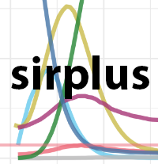
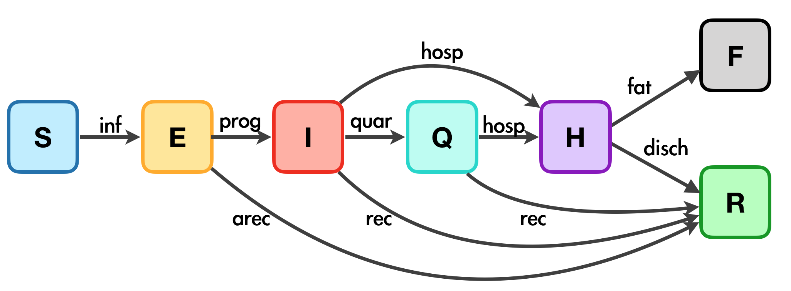

Introduction to sirplus (V2)
Last updated: 12 April 2020
sirplus_intro_v2.Rmd
The sirplus package makes it easy to generate stochastic individual compartment models (ICMs) to simulate contagious disease spread using compartments not available in standard SIR packages. This method and most of the code was originally written by Tim Churches (see his blog post). The sirplus package was developed by the Bioinformatics & Cellular Genomics team at St. Vincent’s Institute of Medical Research in order to help St. Vincents’ Hospital model the COVID-19 pandemic.
The compartments available in this package include:
| Compartment | Functional definition |
|---|---|
| S | Susceptible individuals |
| E | Exposed and infected, not yet symptomatic but potentially infectious |
| I | Infected, symptomatic and infectious |
| Q | Infectious, but (self-)isolated |
| H | Requiring hospitalisation (would normally be hospitalised if capacity available) |
| R | Recovered, immune from further infection |
| F | Case fatality (death due to infection, not other causes) |
The diagram below shows the model structure and how the parameters and compartments associate with each other. See Tim Churches’s blog post for more details.

| trasnitions | Description | Parameters (with default values) |
|---|---|---|
| inf | Infection due to contact |
act.rate.* and inf.prob.*, where * = i, e, q
|
| prog | Progress from asymptomatic to symptomatic |
prog.rand = FALSE, prog.rate, prog.dist.scale = 5, prog.dist.shape = 1.5
|
| quar | From infectious to quarantine |
quar.rand = TRUE, quar.rate = 1/30
|
| hosp | From infected (both before and during quarantine) to require hospitalisation |
quar.rand = TRUE, quar.rate = 1/30
|
| rec | From infected to recovered without hospitalization |
rec.rand = FALSE, prog.dist.scale = 35, prog.dist.shape = 1.5
|
| arec | Exposed individuals recovered before symptomatic |
arec.rand = TRUE, arec.rate = 0.05
|
| disch | recovery after hospitalization |
disch.rand = TRUE, disch.rate = 1/15
|
| fat | Fatality |
fat.rate.base = 1/50, hosp.cap = 40, fat.rate.overcap = 1/25, fat.tcoeff = 0.5
|
#library(sirplus) devtools::load_all(".") ## Loading sirplus
Simulate and inspect a baseline sirplus model
Set parameters
Here we will simulate the epidemiological data for a made-up population with 1000 susceptible individuals (S), 50 that are infected but not in the hospital or in self-quarantine (I; maybe people that are infected/symptomatic but not tested/ aware), 10 confirmed cases that have self-isolated (Q), and 1 confirmed case that has been hospitalized (H). We call this the baseline model because it uses default parameters for disease spread (i.e. no additional interventions).
s.num <- 2000 # number susceptible i.num <- 15 # number infected q.num <- 5 # number in self-isolation h.num <- 1 # number in the hospital nsteps <- 90 # number of steps (e.g. days) to simulate control <- control_seiqhrf(nsteps = nsteps) param <- param_seiqhrf() init <- init_seiqhrf(s.num = s.num, i.num = i.num, q.num = q.num, h.num = h.num) print(init) ## SEIQHRF Initial Conditions ## =========================== ## ## User specified control parameters: ## --------------------------- ## s.num = 2000 ## i.num = 15 ## q.num = 5 ## h.num = 1 ## ## Default control parameters: ## --------------------------- ## e.num = 0 ## r.num = 0 ## f.num = 0 print(control) ## SEIQHRF Control Settings ## =========================== ## ## User specified control parameters: ## --------------------------- ## nsteps = 90 ## ## Default control parameters: ## --------------------------- ## type = SEIQHRF ## nsims = 8 ## prog.rand = FALSE ## quar.rand = TRUE ## hosp.rand = TRUE ## disch.rand = TRUE ## rec.rand = FALSE ## arec.rand = TRUE ## fat.rand = TRUE ## a.rand = TRUE ## d.rand = TRUE ## verbose = FALSE ## verbose.int = 0 ## skip.check = FALSE ## ncores = 4 ## bi.mods = initialize.FUN infection.FUN recovery.FUN departures.FUN arrivals.FUN ## get_prev.FUN ## Base Modules: initialize.FUN infection.FUN recovery.FUN departures.FUN ## arrivals.FUN get_prev.FUN print(param) ## SEIQHRF Parameters ## =========================== ## ## User specified control parameters: ## --------------------------- ## ## Default control parameters: ## --------------------------- ## inf.prob.e = 0.02 ## act.rate.e = 10 ## inf.prob.i = 0.05 ## act.rate.i = 10 ## inf.prob.q = 0.02 ## act.rate.q = 2.5 ## prog.rate = 0.1 ## quar.rate = 0.03333333 ## hosp.rate = 0.01 ## disch.rate = 0.06666667 ## rec.rate = 0.071 ## arec.rate = 0.05 ## prog.dist.scale = 5 ## prog.dist.shape = 1.5 ## quar.dist.scale = 1 ## quar.dist.shape = 1 ## hosp.dist.scale = 1 ## hosp.dist.shape = 1 ## disch.dist.scale = 1 ## disch.dist.shape = 1 ## rec.dist.scale = 35 ## rec.dist.shape = 1.5 ## arec.dist.scale = 35 ## arec.dist.shape = 1.5 ## fat.rate.base = 0.02 ## hosp.cap = 40 ## fat.rate.overcap = 0.04 ## fat.tcoeff = 0.5 ## a.rate = 2.876712e-05 ## a.prop.e = 0.01 ## a.prop.i = 0.001 ## a.prop.q = 0.01 ## ds.rate = 1.917808e-05 ## de.rate = 1.917808e-05 ## di.rate = 1.917808e-05 ## dq.rate = 1.917808e-05 ## dh.rate = 5.479452e-05 ## dr.rate = 1.917808e-05 ## act.rate = 1 ## groups = 1
Simulate baseline
This will produce an seiqhrf object.
baseline_sim <- seiqhrf(init, control, param) baseline_sim ## SEIQHRF Model Simulation ## ======================= ## Model class: seiqhrf ## ## Simulation Summary ## ----------------------- ## Model type: SEIQHRF ## Number of simulations: 8 ## Number of time steps: 90 ## ## Model Output (variable names) ## ----------------------- ## s.num i.num num se.flow is.flow iq.flow iq2h.flow hf.flow ## ds.flow de.flow di.flow dq.flow dh.flow dr.flow a.flow ## a.e.flow a.i.flow a.q.flow e.num r.num q.num h.num f.num
Extract summary of the simulation
summary(baseline_sim) ## Peaks of SEIQHRF Model Simulation: ## =============================== ## Max Time ## s.num 2000.00 1 ## e.num 344.12 21 ## i.num 541.50 26 ## q.num 113.50 27 ## h.num 62.88 36 ## r.num 1928.62 89 ## f.num 3.12 84 ls.str(summary(baseline_sim)) ## e.num : List of 4 ## $ mean : Named num [1:90] NaN 7 15.8 23.8 32.2 ... ## $ sd : Named num [1:90] NA 2.33 4.89 7.44 6.58 ... ## $ CI : num [1:90, 1:2] NaN 2.43 6.16 9.17 19.34 ... ## $ qntCI: num [1:90, 1:2] NA 4.17 12 15.35 21.23 ... ## f.num : List of 4 ## $ mean : Named num [1:90] NaN 0 0 0 0 0 0 0 0 0 ... ## $ sd : Named num [1:90] NA 0 0 0 0 0 0 0 0 0 ... ## $ CI : num [1:90, 1:2] NaN 0 0 0 0 0 0 0 0 0 ... ## $ qntCI: num [1:90, 1:2] NA 0 0 0 0 0 0 0 0 0 ... ## h.num : List of 4 ## $ mean : Named num [1:90] NaN 1.12 1.25 1.25 1.38 ... ## $ sd : Named num [1:90] NA 0.354 0.707 0.886 0.744 ... ## $ CI : num [1:90, 1:2] NaN 0.432 -0.1359 -0.4874 -0.0833 ... ## $ qntCI: num [1:90, 1:2] NA 1 0.175 0 0.175 ... ## i.num : List of 4 ## $ mean : Named num [1:90] 15 14.6 14.5 16.6 20.1 ... ## $ sd : Named num [1:90] 0 0.744 0.926 1.188 2.532 ... ## $ CI : num [1:90, 1:2] 15 13.2 12.7 14.3 15.2 ... ## $ qntCI: num [1:90, 1:2] 15 13.2 13.2 15.2 17.2 ... ## q.num : List of 4 ## $ mean : Named num [1:90] NaN 5.25 5.75 5.88 6.5 ... ## $ sd : Named num [1:90] NA 0.463 1.035 0.835 1.852 ... ## $ CI : num [1:90, 1:2] NaN 4.34 3.72 4.24 2.87 ... ## $ qntCI: num [1:90, 1:2] NA 5 4.17 5 4.17 ... ## r.num : List of 4 ## $ mean : Named num [1:90] NaN 0.25 1 3.25 5.25 ... ## $ sd : Named num [1:90] NA 0.463 1.069 1.753 2.55 ... ## $ CI : num [1:90, 1:2] NaN -0.657 -1.095 -0.185 0.253 ... ## $ qntCI: num [1:90, 1:2] NA 0 0 1 1.35 ... ## s.num : List of 4 ## $ mean : Named num [1:90] 2000 1993 1983 1970 1956 ... ## $ sd : Named num [1:90] 0 2.38 5.5 8.24 8.14 ... ## $ CI : num [1:90, 1:2] 2000 1988 1972 1954 1940 ... ## $ qntCI: num [1:90, 1:2] 2000 1989 1972 1955 1945 ...
Inspect baseline transition distributions
The sirplus model controls transitions between compartments, i.e. a change in state for an individual (e.g. going from self-isolation to hospital), using a variety of transition parameters. You can use the plot() functions, and set parameter method as times to examine the distributions of timings for various transitions based on these parameters. In the case of a disease with observed data available, these plots can be used to sanity check parameter settings.
plot(baseline_sim, "times")

Plot baseline sirplus results
To visualise your sirplus model, you can plot the change in prevalence (i.e. people) over time in each compartment. By default, this plotting function shows the mean count across all simulations and the 95th quantile in the ribbon. You can hide the CI by setting parameter ci to FALSE.
plot(baseline_sim, start_date = lubridate::ymd("2020-01-01"), comp_remove = c('s.num', 'r.num'), plot_title = 'Baseline Model') ## Scale for 'colour' is already present. Adding another scale for 'colour', ## which will replace the existing scale. ## Warning: Removed 4 row(s) containing missing values (geom_path).

Run an experiment
With the sirplus package you can also set up experiments. We will set up two experiments here:
- Experiment #1: One week after the beginning of the epidemic, schools and non-essential businesses are closed to encourage social distancing. This causes the act.rate to gradually drop from 10 to 6 over the course of the next week. In this experiment, we imagine these policies are never lifted, so act.rate remains at 6 for the duration of the simulation.
- Experiment #2: Again, one week after the beginning of the epidemic, social distancing policies are put into place resulting in act.rate dropping from 10 to 6 over the next week. But after two weeks these policies are lifted and the act.rate returns to normal within the next week.
# Experiment #1 vals <- c(10, 7) timing <- c(7, 14) act_rate <- vary_param(nstep = nsteps, vals = vals, timing = timing) control <- control_seiqhrf(nsteps = nsteps) param <- param_seiqhrf(act.rate.e = act_rate, act.rate.i = act_rate * 0.5) init <- init_seiqhrf(s.num = s.num, i.num = i.num, q.num = q.num, h.num = h.num) sim_exp <- seiqhrf(init, control, param) # Experiment #2 vals <- c(10, 7, 7, 10) timing <- c(7, 14, 21, 28) act_rate_relax <- vary_param(nstep = nsteps, vals = vals, timing = timing) param <- param_seiqhrf(act.rate.e = act_rate_relax, act.rate.i = act_rate_relax * 0.5) sim_exp_relax <- seiqhrf(init, control, param) # Compare experiments 1 and 2 to the baseline simulation plot(list("Baseline" = baseline_sim, "Closures" = sim_exp, "Closures (2 mo)" = sim_exp_relax), start_date = lubridate::ymd("2020-01-01"), comp_remove = c('s.num', 'r.num'), plot_title = 'Closures Experiment') ## Scale for 'colour' is already present. Adding another scale for 'colour', ## which will replace the existing scale. ## Warning: Removed 64 row(s) containing missing values (geom_path).

From these results we see that this policy would likely reduce the peak number of infections from 500 to 300 and would “flatten the curve” for infections and thus hospitalizations (the peak in number of infected people is lower, but the number of people infected declines more slowly after the peak of the epidemic than in the baseline model).
Visualize sirplus: Advanced Plotting Options
A. Adding known data
You can use the plot() function to include known compartment values alongside your simulations by supplying the known values as a dataframe to parameter known. This can be helpful when wanting to know how well experiments are simulating the epidemic progression to the point where you have data.
For example, if we know the hospitalization numbers have been growing exponentially (by 0.2) at each step, we can see how that compares to our experiments.
known <- data.frame('time' = seq(1:30), 'h.num' = seq(0, 10, by=0.2)[1:30]) plot(list("Baseline" = baseline_sim, "Closures" = sim_exp, "Closures (2 mo)" = sim_exp_relax), time_lim = 45, known = known, start_date = lubridate::ymd("2020-01-01"), comp_remove = c('s.num', 'r.num', 'e.num', 'i.num', 'q.num'), plot_title = 'Closures Experiment') ## Scale for 'colour' is already present. Adding another scale for 'colour', ## which will replace the existing scale. ## Warning: Removed 32 row(s) containing missing values (geom_path).
 From this, we can see that the closure for 2 months is slightly pessimistic, while the closures simulation is close to the known hospitalization rate.
From this, we can see that the closure for 2 months is slightly pessimistic, while the closures simulation is close to the known hospitalization rate.
B. Plotting compartment separately
You can use the plot() function to plot counts for each compartment separately by specifying sep_compartments as ‘y’. This can be useful when visualizing compartments on different scales (e.g. i.num v f.num) without using log transformations.
plot(sim_exp, sep_compartments = TRUE, start_date = lubridate::ymd("2020-01-01"), plot_title = 'Closures Experiment') ## Scale for 'colour' is already present. Adding another scale for 'colour', ## which will replace the existing scale. ## Warning: Removed 5 row(s) containing missing values (geom_path).

C. Weekly hospitalization numbers
Use the plot() function with parameter method = "weekly_local" to extract and plot the number of weekly expected patients in a hospital. If return_df is TRUE, the function returns a dataframe that generates the plot, otherwise, it returns a ggplot object.
This function takes the following input:
-
sims: Single or list of outputs from simulate.seiqhrf(). -
market.share: Percent of cases in your model population (s.num) that are anticipated at the hospital of interest. Default = 4% (0.04). -
icu_percent: Percent of hospitalised cases are are likely to need treatment in an intensive care unit (ICU). Default = 10% (0.1). -
start_date: Epidemic start date. Default isNA. -
show_start_date: First date to show in plots. Default is to show from beginning -
time_lim: Number of days (nsteps) to include. Default = 90. -
total_population: True population size. This parameter is only needed if the simulation size (s.num) was smaller than the true population size (i.e. scaled down) to reduce computational cost.
plot(baseline_sim, method = "weekly_local", time_lim = 40, start_date = ymd("2020-01-01"), show_start_date = ymd("2020-01-06"), return_df = TRUE) ## $plot

##
## $result
## # A tibble: 6 x 7
## yr_wk h.num h.ci5 h.ci95 icu.num icu.ci5 icu.ci95
## <fct> <dbl> <dbl> <dbl> <dbl> <dbl> <dbl>
## 1 2020-01-06 16.3 4.55 29.3 1.81 0.505 3.26
## 2 2020-01-13 59.4 31.4 96.5 6.6 3.49 10.7
## 3 2020-01-20 186. 136. 257. 20.6 15.1 28.6
## 4 2020-01-27 345. 287. 438. 38.3 31.9 48.6
## 5 2020-02-03 386. 325. 497. 42.9 36.1 55.2
## 6 2020-02-10 49.8 35.9 62.8 5.54 3.99 6.98